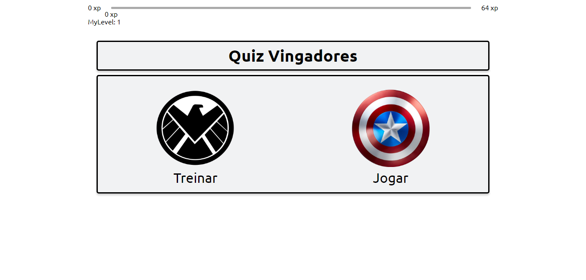
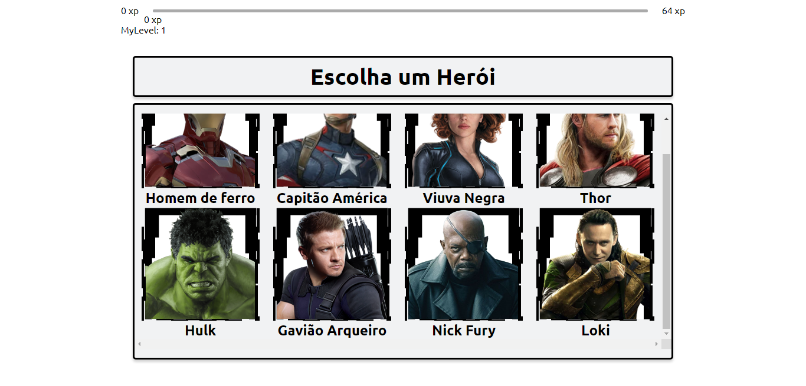
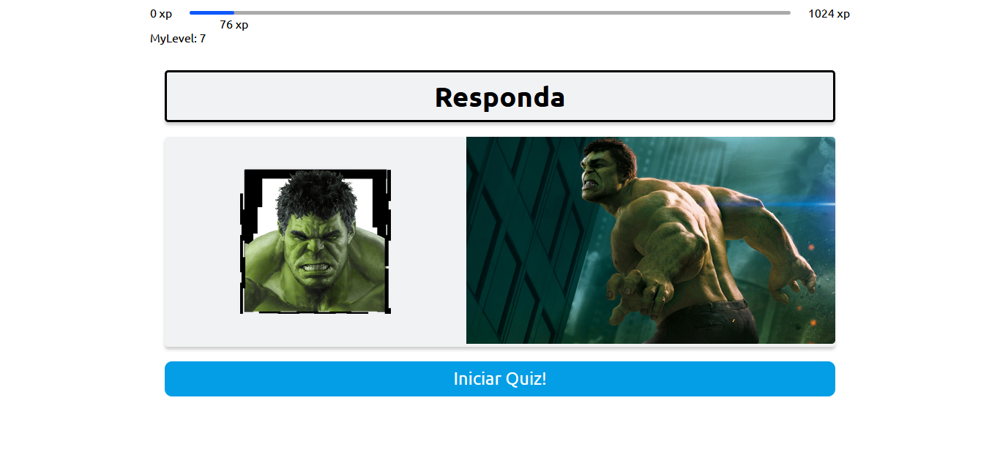
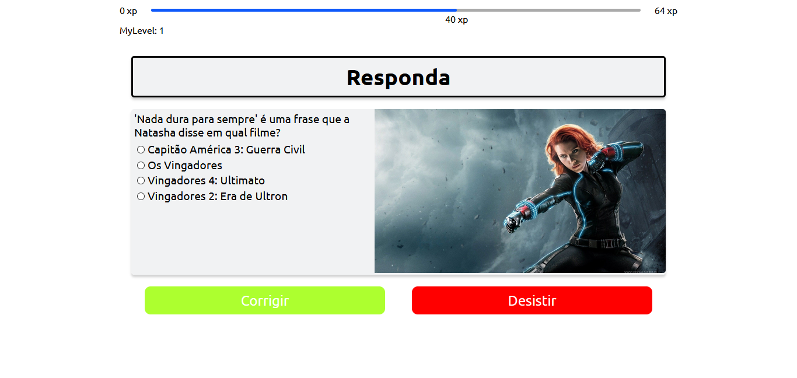
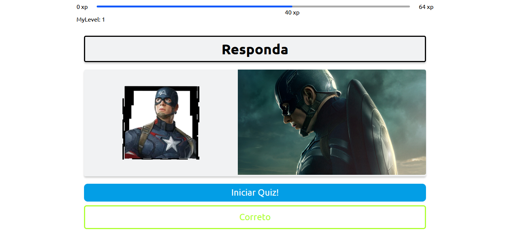

Quiz React
Status: Completo
Ver Código TestarO que me levou a construir o projeto?
Eu participei de um evento de tecnologia chamado NLW que era a quarta edição do evento, e a minha primeira participação, nela aprendi alguns conceitos de React, com Next e Typescript até então só tinha praticado apenas React. Durante o evento percebi que o quão incrível são essas tecnologias e eu tinha que criar algum projeto relacionado ao o que aprendi, então tive a ideia de criar um quiz dos Vingadores.

Resumo
O Quiz React possui dois modos, o “Jogar” e o “Treinar”, no “Jogar” você ganha experiência e sobe o seu nível, mediante ao acerto de uma pergunta sobre um herói à sua escolha. No “Treinar” você não ganha experiência apenas consegue ver as perguntas e descobrir a resposta mediante a tentativa e erro antes de ir para o modo “Jogar”. Ao todo são 97 perguntas divididas entre todos os heróis disponíveis. A seguir temos uma descrição detalhada sobre o funcionamento do sistema.
Como funciona?
Inicialmente você seleciona o modo de jogo, logo em seguida você é levado para uma página, essa página pode ser a “play-mode” ou “training-mode”. Depois é carregado um componente onde estão todos os heróis disponíveis, os heróis estão vindo de um arquivo JSON chamado heroes onde temos o nome, endereço da imagem e a rota correspondente a cada herói.
Seleção de heróis
Ao todo para aparecer os heróis temos 2 componentes a página chama o componente “Selection” e envia para ele um parâmetro correspondente à página, ou seja a página play-mode vai enviar o parâmetro “play” e a training-mode envia o parâmetro “training”.
Dentro do Selection é feito a leitura do JSON heroes com o map, e para cada objeto do array é criado um componente do tipo “HeroeSelect”, e enviado por parâmetro todos os dados do JSON mais o parâmetro que a página enviou o “play” ou o “training”.
No HeroeSelect é criado na interface uma div contendo a imagem do herói e seu nome, tudo dentro de um link que é gerado dinamicamente na construção do elemento, esse link é formado pelo parâmetro de modo, mais a rota do personagem. Exemplo: “play/homem-de-ferro” ou “training/thor”. A construção dinâmica tem um papel fundamental para a regra de negócio do sistema.
Questões
Agora dentro da rota “/play” ou “training”, acessamos uma página dinâmica chamada [heroe] que carrega um componente chamado “HeroeQuestion”. Nesse componente é carregada a estrutura padrão do quiz, através da rota(url) é retirado o nome do herói utilizando useRouter com essa informação carregamos uma imagem de background outras informações que veremos mais adiante.
Três componentes são chamados dentro do componente “HeroeQuestion” são eles: MixerAlternatives, InteractiveButtons e CorrectionStatus. Para todos estes componentes conseguirem comunicar-se entre si existe o QuestionsContext, ele é um context que é responsável por servir funções que podem ser acessadas por toda a aplicação. Nele é possível ver qual a questão está ativa, qual alternativa o usuário escolheu, se ela está correta entre muitas outras.
MixerAlternatives
MixerAlternatives é um componente que recebe do context, se a questão está ativa, qual a questão e suas alternativas e um número aleatório de 1 a 4. No retorno do componente é gerado estrutura condicional. Se o usuário ativou a questão e o número aleatório for igual a 1-4, então é chamado um componente “Alternative” que recebe as 4 alternativas onde o número aleatório é onde a resposta vai ficar. Caso contrário retorna apenas o ícone do herói selecionado.
InteractiveButtons
InteractiveButtons recebe do context, funções de correção e a função de gerar uma nova questão. Aqui fica todos os botões utilizados para interagir com as questões cada um possui funcionalidades específicas e condicionais.
Botão: Iniciar Quiz!
Inicialmente aparece um botão azul escrito “Iniciar quiz!”, quando acionado ele dispara uma função que recebe através do useRouter o nome do herói e envia para uma outra função que é responsável por acessar um JSON com 97 perguntas sobre todos os heróis, lá ele filtra o herói que está selecionado e cria um array com todas, em seguida é misturado a ordem do array e selecionada a primeira e atualizada o useState da questão mostrando que existe uma nova questão ativa. Em seguida é gerado um número aleatório de 1-4 para determinar a posição da resposta.
Quando ativado o botão some da tela dando lugar para os botões “corrigir” e “desistir”.
Corrigir e Desistir
Quando for acionado o botão “Iniciar Quiz!”, é gerado através de uma condição os botões Corrigir e Desistir, mais uma vez através do useRouter a rota é consultada e se estiver no modo play, é chamada uma função de correção que se a opção estiver correta o usuário recebe um aviso e experiência. Caso esteja no modo training é chamada uma função que retorna apenas um aviso.
E o botão desistir reseta a questão ativa, e retorna o botão “Iniciar Quiz!”.

CorrectionStatus
É um componente que recebe um valor de um hook que gerado através da função de correção lá e visto se o usuário acertou a questão ou não, o CorrectionStatus verifica o resultado baseado nele é exibido na tela “Correto” ou “Errado”.
Tecnologias
- Typescript
- JavaScript
- HTML5
- CSS3
- React JS
- Next JS
Aprendizado
- Estilização
- Componetização
- Uso do Context
- Uso do UseState
- Uso do UseRouter
- Uso do UseEffect
- Interfaces com Typescript
- Rotas dinâmicas com Next JS
- Uso do filter
- Uso do map
- Uso do module css